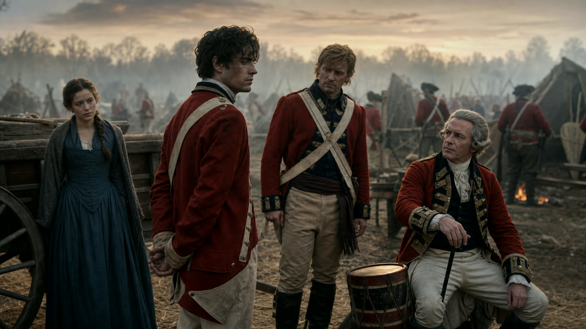

The red line of eighteenth-century battle depended on men loading, turning and standing together under pressure. Military punishment pursued the same geometry: one offender in front of the assembled regiment, his pain converted into a lesson for everyone watching.
Why Punish a Man in Front of His Regiment?
An eighteenth-century army was not held together by drill alone. Soldiers served for low pay, often far from home, inside institutions that feared desertion, drunkenness, theft, sleeping on sentry duty, insubordination and mutiny. Commanders believed an offence committed by one man could spread through a unit. Punishment therefore addressed two audiences: the convicted soldier who suffered it and the ranks ordered to watch.
This was exemplary justice. Its object was not primarily rehabilitation in the modern sense. It was to make the consequence of disobedience immediate, memorable and public. The Articles of War defined offences; courts martial gave punishment a legal form; the parade turned the sentence into theatre. That formality matters. Violence delivered after a court martial was not the same thing as an officer striking a soldier in private rage, even when both rested on a profound inequality of power.
Law, Discretion and the Lash
The British military system combined written law with broad punitive power. A recent study published by the U.S. Army’s legal journal notes that the British Articles of War listed sixteen capital offences and placed no limit on corporal punishment during the Seven Years’ War. Its analysis of general courts martial from 1757 to 1763 found that more than 24 percent produced capital convictions, while sentences of flogging averaged 742 lashes. A sentence and the number actually administered were not necessarily identical, but such totals reveal what authorities considered legally imaginable.
Death was available for offences understood to threaten the army’s existence—especially mutiny and desertion in aggravated circumstances—though pardons and commutations formed part of the system. Flogging offered commanders a punishment short of execution that was still spectacular, painful and degrading. The same logic helps explain why reform proved so slow: many officers regarded the lash not as an incidental cruelty but as the final force behind every lesser order.
In Britain, annual Mutiny Acts and royal Articles of War sustained military jurisdiction; different courts martial had different powers. The system was not static. Regulations and maximum sentences changed, medical supervision increased, and public and parliamentary scrutiny became harder to resist.
Flogging, Gauntlets, Marking and Shame
Flogging became the most notorious British Army punishment. A convicted soldier was secured for the sentence, and drummers commonly administered the lashes. The National Army Museum’s description of an 1820 print explains the grim occupational logic: drummers had rhythm and strong arms. It also records that lash totals were unlimited until 1812 and could occasionally exceed one thousand.
The punishment was deliberately witnessed. The body carried pain, but the regiment carried the warning. It could also carry stigma. During the nineteenth century, deserters might be “marked” with the letter D—a procedure critics plainly understood as branding even when officials defended a narrower term. Imprisonment, hard labour, loss of pay, confinement and discharge increasingly competed with bodily punishment, but they did not replace it in one clean reform.
Running the gauntlet belonged to the same family of exemplary violence but should not be carelessly treated as the standard British flogging procedure. A condemned man passed between ranks who struck him as he moved. The practice appeared in European and earlier Anglo-American military settings; an 1864 parliamentary debate explicitly contrasted the Austrian gauntlet with British practice. That distinction is central to reading Discipline.
The Long Retreat from Corporal Punishment
Opposition did not begin with Victorian hindsight. Parliament debated military flogging repeatedly in the early nineteenth century. Critics called it degrading, dangerous and hostile to recruitment. Defenders answered that imprisonment was impractical on campaign and that no substitute carried the same immediate authority. In 1832 and 1833, experienced officers claimed that experiments without flogging had weakened discipline; abolitionists replied that brutal punishment helped produce the very kind of army that supposedly required it.
That argument gradually changed because the army changed. Barracks, policing, military prisons, record-keeping, longer professional administration and new ideas about the respectable soldier expanded the alternatives available to commanders. Public feeling also altered. In 1846 the Articles of War still permitted maximums of 200 lashes after a general court martial, 150 after a district or garrison court and 100 after a regimental court. That August, Parliament was told that the Duke of Wellington had ordered a single maximum of 50 lashes. The new ceiling remained severe, but it marked a substantial retreat.
The Mutiny Act of 1868 restricted flogging to active service and certain offences committed under sentence in military prisons. The Army Discipline and Regulation debates of 1879 narrowed it further. The Army Discipline and Regulation Act of 1881 restricted corporal punishment to military prisons; that remaining prison power was abolished in 1906. “Abolition in 1881” is therefore useful shorthand, not the entire legal story.
Discipline turns witnesses into participants.
The ballad borrows the geometry of the gauntlet and places it inside a fictional British regiment. Each man can call his own blow small. Together, they become the punishment.
“We beat our friend to save him.▶ Watch Discipline
That was what we chose to think.”

Lyrics & song notes →What the Song Documents—and What It Invents
Discipline is historically grounded fiction. British troops did serve in Germany during the Seven Years’ War. Their military world did include courts martial, flogging, public punishment, severe penalties for desertion and a rigid hierarchy. Patrick, Tom, Anna Keller and Lord Buckers are invented. So are the assault, private execution and particular punishment shown in the lyrics.
The line of friends striking Patrick is a deliberate compression. It combines the public lesson of a British regimental flogging with the distributed guilt of running the gauntlet. Historically, a drummer would more typically wield the lash while the regiment watched. Dramatically, making the friends raise their own hands asks a different question: when authority orders injustice, does obedience divide guilt until it disappears—or multiply it?
The answer is not that armies can function without rules, penalties or collective trust. The nineteenth-century debate itself shows how difficult replacement appeared to officers responsible for units on campaign. The song’s accusation is narrower and harder: discipline loses its moral claim when it protects the private will of the powerful rather than the lawful purpose of the service.
Follow the evidence
- National Army Museum, “The Drummer, c. 1820” — drummers, flogging and the absence of a lash limit before 1812.
- U.S. Army, The Army Lawyer, “The Articles of War and the American Revolution” — British law, capital convictions and Seven Years’ War sentencing data.
- The National Archives, “Courts martial and desertion in the British Army, 17th–20th centuries” — court structure and surviving records.
- Hansard, “Flogging in the Army,” 18 June 1811 — early parliamentary abolition arguments.
- Hansard, “Flogging in the Army,” 7 August 1846 — sentence limits and arguments for retention.
- Hansard, “Mutiny Bill—Committee,” 10 March 1864 — the parliamentary contrast between the Austrian gauntlet and British military punishment.
- Hansard, 28 January 1913 — official summary of the 1868, 1881 and 1906 restrictions.
- Army Act 1881 — the consolidated statutory text.
This essay is a companion to a fictional song, not evidence that its named characters or crimes existed. Question the historical argument or the lyric at The Campfire.